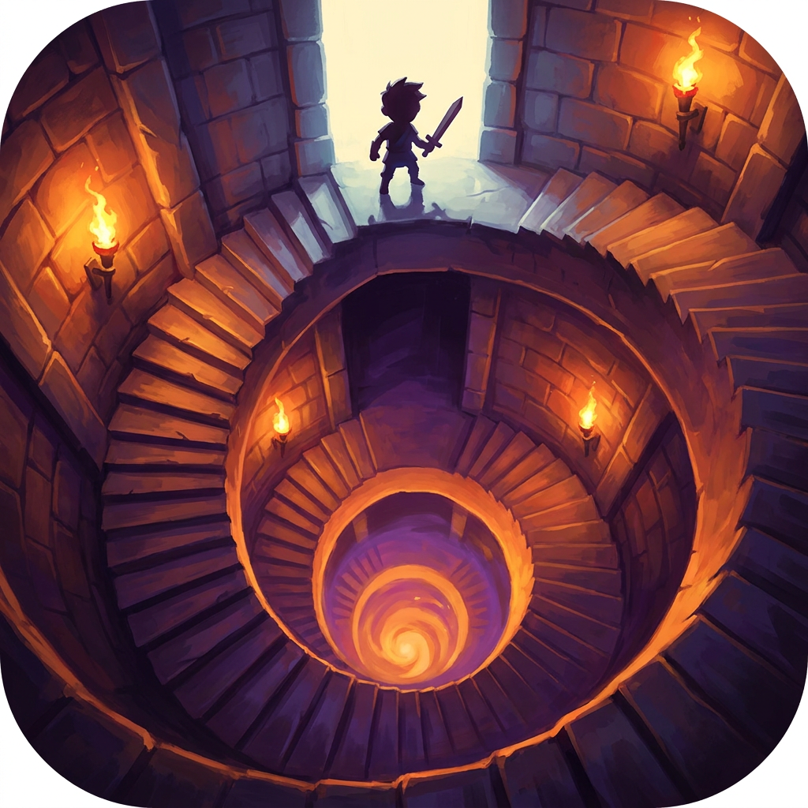
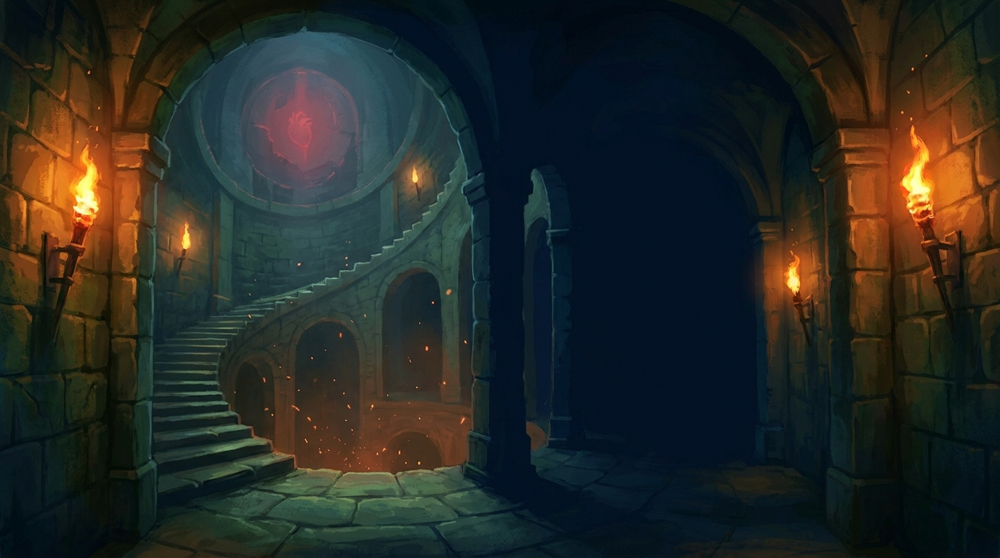

everdeep · devlog
Playtest pass: bosses, puzzles, lore, codex
2026-07-17
Live playtest session, three builds shipped, all compiled clean with zero errors. Everything below came straight from Aaron playing and calling out what felt wrong.
- Boss arenas now vary every fight: room size and floor plan both change per room, five layouts instead of the one identical arena that showed up every time.
- First boss eased off: bosses met early come in softer and ramp to full strength by depth twelve, with a longer grace window before their first attack.
- Bosses now call their own brood: a summoning boss brings in small versions of its own kind as reinforcements, capped so the room never floods, and it starts the fight alone instead of surrounded.
- Rune-plate puzzle rebuilt into a real memory challenge: the room flashes the sequence once, then you repeat it. One clear miss message instead of the old spam.
- Lore pages in the world are now small weathered parchment set on a stone ledge, not an oversized sheet of paper.
- Codex screen cleaned up: proper ledger framing, a divider between columns, and highlight rows on the entries you can open.
Everdeep is now under version control for the first time, and a studio style guide is in place setting the quality bar for every asset and screen going forward.
The art shown here is from the current build. Live gameplay captures land in the next report now that in-game screenshot capture is wired in.

